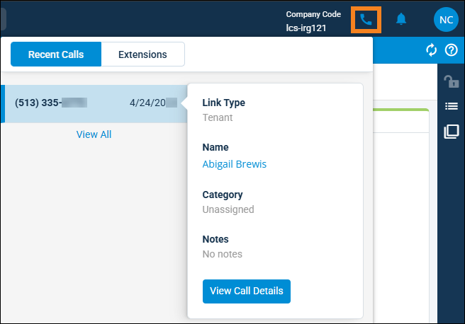

Source: https://rmxhelp.rentmanager.com/Topics/Express/KB/LP-rmVoIP.htm
rmVoIP Phone System
rmVoIP is the fully independent, business-class phone system offered by LCS. rmVoIP provides enterprise-grade phone features like auto attendants, hunt groups, conference calls, call forwarding, call recording, and more. The main advantage to using the rmVoIP phone system is that it fully integrates with Rent Manager, allowing you to make and receive phone calls directly through the software and have those conversations saved in the history/notes of the associated accounts. For more information on utilizing rmVoIP in Rent Manager, refer to Set Up rmVoIP for Rent Manager.
More Information
This feature is licensed and must be purchased separately. For more information, contact your sales representative at sales@rentmanager.com.
Recent Calls and Extensions
Once rmVoIP is set up and you have an extension assigned to your user account, displays in the header of Express.

Recent Calls
The Recent Calls tab displays calls made to your extension from newest to oldest, including any Rent Manager links, categories, or notes. You can click View Call Details to open the Call Details pop-up and view additional information about the call. For example, if a call is linked to a tenant account, you can review their current balance, linked service issues, and their transaction history.
If you want to view only incoming calls from a specific date range, you can click View All to open the Incoming Call History page and filter the list. For more information, refer to rmVoIP Incoming Call History (Page).
Extensions
The Extensions tab displays a list of all Rent Manager users with assigned rmVoIP extensions, their extension number, and their current availability statuses.
Related Preferences
If the Show extensions in presence listing option is disabled in system preferences or a user's personal preferences, only users' names and statuses display on the Extensions tab. For more information, refer to rmVoIP (System Preferences) and rmVoIP Preferences (Personal Preferences).
To filter and sort this list of extensions, select  to open the Extension Settings and select from the following options:
to open the Extension Settings and select from the following options:
| Option | Description | |||||||||
|---|---|---|---|---|---|---|---|---|---|---|
|
Extensions |
Each user and their extension displays on the Extensions tab. All extensions are selected by default. |
|||||||||
|
Include new extensions |
If enabled, newly added extensions are automatically added to the extensions list based on your selected Sort Order. |
|||||||||
|
Sort Order |
The organization method used for the extension list. |
|||||||||
|
rmVoIP in rmAppSuite Pro
If you use rmAppSuite Pro, users with rmVoIP extensions can call or text prospects, tenants, vendors, and owners directly through the app without using their personal phone number. As an added benefit, records of calls placed through rmVoIP are saved to Rent Manager.
For more information, refer to Set Up rmAppSuite Pro.
Additional rmVoIP Features
There are a variety of other rmVoIP features available through NDT that are not set up in Rent Manager. For more information and assistance with these features, refer to NDT VoIP Solutions page on the LCS website, or contact NDT support at 513-583-1482 or info@lcs.com.
| Feature | Description |
|---|---|
|
Auto Attendant |
The Auto Attendant feature uses an audio file to verbally direct callers to specific options, such as front office staff members, maintenance technicians, or a user's direct extension. |
|
Call Recording |
The Call Recording feature captures audio from all call participants and attaches it as an audio file to a corresponding history/note item in Rent Manager, allowing them to be sent to other users or reviewed if necessary. Recordings can also be listened to in the NDT portal. |
|
Find Me, Follow Me |
The Find Me, Follow Me feature routes incoming calls to different phones in sequential order. For example, you may want to have calls first go to a specific user's cell phone, then to their office phone, then finally prompt the caller to leave a voicemail in the NDT system. |
|
Voicemail to Email |
The Voicemail to Email feature sends audio recordings and automatic transcriptions of voicemails directly to users via email. |